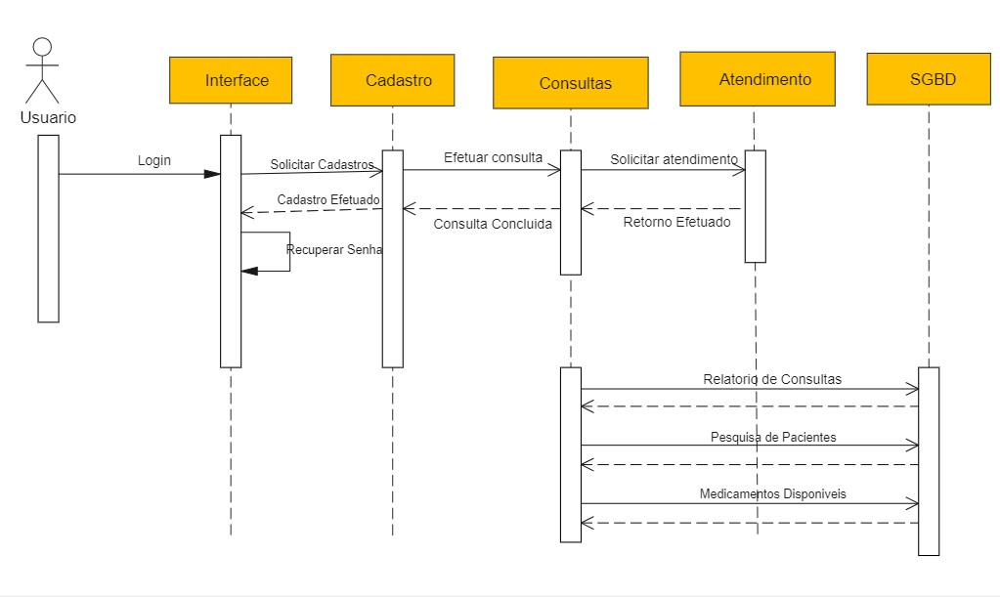
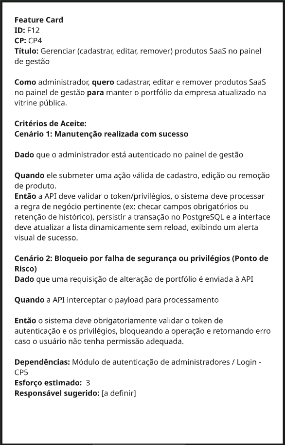

IT1 — Vitrine Pública¶
Período: 15/04/2026 – 25/05/2026
Status: 🔄 Em andamento
Meta da Iteração (Iteration Goal): Ao fim da IT1: (1) qualquer visitante sem autenticação navega pela vitrine pública, visualiza o catálogo de produtos SaaS publicados, consulta informações institucionais e canais de contato da Crianex; (2) um administrador autenticado cadastra, edita, publica e despublica produtos e gerencia usuários via painel seguro; e (3) visitantes consultam e avaliam artigos do FAQ categorizados — tudo em layout responsivo verificado em mobile (≥ 375 px) e desktop (≥ 1 280 px), com Formal Client Validation aprovada por Otavio.
Observação: A entrega da unidade 2 ocorrerá dia 19 de maio de 2026, no entanto, nossa iteração termina dia 25 de maio de 2026, por isso alguns dos objetivos definidos para a iteração ainda estarão em fase de conclusão.
Características de Produto (CPs) Trabalhadas¶
De acordo com o Documento de Visão e o planejamento no Miro, esta iteração foca na entrega de valor para o público externo e interno (visitantes, potenciais leads, cliente e admin), cobrindo as seguintes CPs:
| CP | Característica de Produto | OE Relacionado | Prioridade |
|---|---|---|---|
| CP4 | Plataforma Pública de Apresentação da Emprasa | OE2 | Alta |
| CP5 | Painel de Gerenciamento do Administrador | OE2 | Alta |
| CP6 | CP6 - FAQ e Base de Conhecimentos por Produto | OE2 | Média |
Cerimônias e Reuniões (FDD + Kanban)¶
Registro das cerimônias metodológicas realizadas pela equipe para garantir o alinhamento arquitetural e a validação contínua (Definition of Ready e Technical Design Review).
| Data | Cerimônia | Participantes | Saída / Ata |
|---|---|---|---|
| 10/05/2026 | Domain Modeling & Iteration Replenishment & Commitment | Lucas, Heitor, Hugo, Otávio (Cliente) | Escopo e Iteration Goal definidos. |
| 11/05/2026 | Feature Discovery & Slicing | Lucas, Heitor, Hugo, Philipe, Leonardo | Features macros fatiadas em issues atômicas |
| 17/05/2026 | Technical Design Review | Lucas, Heitor, Philipe, Hugo, Leonardo, Camille | Diagramas Leves, Critérios de Aceite e Feature Cards aprovados. |
Entregas e Decisões de Design (Technical Design)¶
Durante esta iteração, aplicamos a Formalização Seletiva, criando diagramas leves e acordos de arquitetura para mitigar riscos antes de codar, e a validação dos features cards:
Figura 1 — Exemplo de Diagrama Leve

Fonte: Wondershare, 2026.
Figura 2 — Exemplo de Feature Card

Fonte: Elaborado pelos autores.
O que é um Diagrama Leve?¶
Trata-se de uma representação visual simplificada do fluxo de comunicação entre as entidades do sistema (Frontend, API, Banco de Dados, etc.). Em vez de utilizar toda a notação formal e rigorosa da UML, o diagrama leve foca no essencial: ilustrar de forma clara e ágil como os dados transitam para resolver uma funcionalidade específica. Isso facilita o alinhamento técnico sem gerar sobrecarga de documentação extensa e engessada.
O que é o padrão de Feature Card?¶
O Feature Card é um elemento visual utilizado na fase de planejamento (geralmente no Miro ou ferramenta similar) que documenta uma funcionalidade de forma atômica. Ele consolida informações cruciais como o título da feature, regras de negócio e os critérios de aceitação (frequentemente escritos no formato BDD - Dado/Quando/Então). Esse modelo garante que toda a equipe tenha clareza do escopo e do comportamento esperado antes de escrever a primeira linha de código, servindo como insumo direto para a criação das issues.
Evidências de Entrega e Qualidade¶
Abaixo estão registradas as evidências das entregas realizadas durante a iteração.
Figura 3 — Diagrama Leve Desenvolvida para a Feature F12

Fonte: Elaborado pelos autores.
Este diagrama detalha o fluxo arquitetural final acordado e validado, ilustrando a comunicação entre os componentes da Vitrine Pública.
Figura 4 — Feature Card Desenvolvida para a Feature F12

Fonte: Elaborado pelos autores.
O feature card consolidado documenta atômicamente os requisitos da funcionalidade, incluindo critérios de aceite formatados em BDD para orientar o desenvolvimento e os testes.
Rastreabilidade e Priorização do Backlog¶
Como parte da preparação para esta iteração, o backlog foi estruturado com rastreabilidade completa entre OEs, CPs, Features, RFs e RNFs, e priorizado objetivamente pelo método Valor × Esforço (IP = VB / ES).
- Rastreabilidade de Requisitos — mapeamento completo OEs → CPs → Features → RFs/RNFs com vínculos bidirecionais.
- Priorização do Backlog — método IP = VB/ES com diagramas de Valor × Esforço e tabelas de prioridade por Feature e RNF.
Protótipo de Alta Fidelidade¶
Protótipo desenvolvido em HTML com base nas features priorizadas para a iteração.
Critérios de Aceitação Validados (BDD)¶
Todas as issues abaixo atingiram o Definition of Ready (DoR) e passaram pela verificação dos requisitos funcionais (RF) e não funcionais (RNF).
CP4 — Plataforma Pública de Apresentação da Empresa¶
| Requisito | Descrição | Critério de Aceitação (BDD) |
|---|---|---|
| RF21 | Cadastrar produto SaaS | Dado que o administrador está autenticado no painel de gestão, Quando ele preencher as informações obrigatórias de uma nova solução SaaS (nome, descrição, diferenciais) e submeter o formulário, Então o sistema deve persistir o novo produto no banco de dados e torná-lo imediatamente apto para exibição na vitrine pública. |
| RF22 | Editar produto SaaS | Dado que o administrador acessa a lista de produtos existentes, Quando ele modificar os dados de um produto ativo (como atualizar um texto ou imagem) e salvar, Então o sistema deve substituir as informações antigas no banco e a mudança deve ser refletida na vitrine sem a necessidade de intervenção de um desenvolvedor. |
| RF23 | Remover produto SaaS | Dado que a Crianex descontinuou uma solução SaaS, Quando o administrador confirmar a ação de remover (ou inativar) o produto no painel, Então o sistema deve processar a exclusão do catálogo e garantir que o produto deixe imediatamente de ser listado na vitrine pública para os clientes. |
| RF25 | Publicar produto SaaS | Dado que o administrador acessa o painel de gerenciamento de produtos, Quando ele acionar a opção de "Publicar" um produto que estava inativo, Então o sistema deve alterar o status do registro e torná-lo imediatamente visível e acessível para os visitantes na vitrine pública. |
| RF59 | Despublicar produto SaaS | Dado que um produto SaaS está atualmente visível na vitrine, Quando o administrador acionar a opção de "Despublicar", Então o sistema deve ocultá-lo imediatamente da interface pública, preservando todos os dados e o histórico do produto intactos no banco de dados (sem exclusão). |
| RF27 | Cadastrar contato com a empresa | Dado que o visitante preencheu corretamente os campos do formulário de contato (ex: nome, e-mail, mensagem) no rodapé da vitrine, Quando ele clicar em "Enviar", Então o sistema deve registrar a mensagem no banco de dados e exibir um alerta visual de sucesso na tela. |
| RF28 | Acessar página institucional | Dado que o visitante está navegando pela vitrine pública, Quando ele clicar no link de "Sobre nós" ou "Sobre" ou "Institucional", Então o sistema deve redirecioná-lo para a rota correspondente e exibir os dados de apresentação da empresa. |
| RNF02 | Tempo de resposta da vitrine | Dado que o visitante solicita o acesso à página institucional, Quando o sistema processar a requisição e montar a interface, Então o tempo total de carregamento dos dados não deve ultrapassar um limite aceitável (ex: 2 segundos), garantindo fluidez e retenção. |
| RNF03 | Tempo de resposta da área administrativa | Dado que o administrador comanda a ação de publicação ou despublicação no painel, Quando o sistema processar a requisição, Então o tempo de resposta do servidor e da interface para confirmar o sucesso da operação não deve exceder 2 segundos, garantindo a fluidez exigida para a área administrativa. |
| RNF06 | Integridade transacional | Dado que o backend iniciou o processo de gravação do contato, Quando ocorrer uma falha inesperada de comunicação com o banco de dados no meio da operação, Então o sistema deve realizar a reversão total da transação (rollback) para evitar o salvamento de registros corrompidos ou parciais, alertando o usuário sobre o erro. |
| RNF10 | Proteção contra abuso do formulário público | Dado que o formulário está exposto publicamente na vitrine, Quando uma tentativa de submissão ocorrer, Então o sistema (API) deve validar a requisição por meio de um mecanismo de proteção (Rate Limiting) antes de processá-la, bloqueando envios maliciosos ou realizados por spam. |
| RNF21 | Disponibilidade das informações institucionais | Dado que um artigo de FAQ foi publicado pelo administrador, Quando a página pública da base de conhecimento for renderizada, Então o conteúdo do artigo publicado deve estar disponível na resposta SSR de forma íntegra e indexável, sem depender de execução de JavaScript pelo crawler, e artigos despublicados não devem aparecer na resposta SSR. |
CP5 — Painel de Gerenciamento do Administrador¶
| Requisito | Descrição | Critério de Aceitação (BDD) |
|---|---|---|
| RF08 | Autenticar perfil de usuário | Cenário 1: Dado que o administrador está na tela de login com credenciais válidas cadastradas no Supabase Auth, Quando submete email e senha corretos, Então o sistema deve autenticar via Supabase Auth, gerar sessão JWT e redirecionar para '/admin'. Cenário 2: Dado que o administrador insere email ou senha incorretos, Quando submete o formulário, Então o Supabase Auth deve retornar erro e a interface deve exibir mensagem genérica sem expor detalhes internos. |
| RF09 | Encerrar sessão | Cenário 1: Dado que o administrador está autenticado no painel, Quando aciona "Sair", Então o sistema deve invocar signOut() no Supabase Auth, invalidar o refresh_token server-side, limpar a sessão local e redirecionar para '/login'. Cenário 2: Dado que o administrador encerrou a sessão, Quando tenta acessar /admin diretamente pela URL, Então o sistema deve bloquear o acesso e redirecionar para /login, sem renderizar nenhum dado do painel. |
| RNF01 | Isolamento de acesso administrativo | Dado que a Crianex quer entrar na área administrativa da empresa, Quando o administrador/membro entra no domínio do site (diferente da vitrine pública), Então o sistema deve mostrar na tela a área de login para o membro/admin poder acessar o conteúdo. |
| RNF03 | Tempo de resposta da área administrativa | Cenário 1: Dado que o administrador está autenticado e acessa qualquer tela do painel, Quando a requisição é enviada ao Supabase, Então a resposta deve ser entregue em no máximo 2 segundos em condições normais de rede. Cenário 2: Dado que múltiplos administradores acessam o painel simultaneamente, Quando o volume de requisições aumenta, Então o tempo de resposta não deve ultrapassar 4 segundos e o sistema não deve retornar erro 500. |
| RF10 | Acessar painel administrativo | Cenário 1: Dado que o administrador possui sessão JWT válida com role admin, Quando acessa a rota /admin, Então o sistema deve validar o token via Supabase Auth, aplicar RLS no banco e renderizar o painel com os dados permitidos para aquele perfil. Cenário 2: Dado que o administrador possui sessão expirada, Quando tenta acessar o painel, Então o sistema deve tentar renovar via refreshSession() e, se falhar, redirecionar para /login sem renderizar nenhum dado. |
| RNF09 | Controle de acesso por linha (RLS) | Cenário 1: Dado que o administrador autenticado realiza uma query no Supabase DB, Quando a requisição chega ao banco, Então a política RLS deve filtrar os dados com base em auth.uid() e auth.role(), retornando apenas os registros autorizados para aquele usuário. Cenário 2: Dado que um administrador autenticado tenta acessar dados fora do seu escopo, Quando a query é executada no Supabase DB, Então a política RLS deve bloquear server-side e retornar conjunto vazio ou 403. |
| RF11 | Editar informações de usuários da Crianex | Cenário 1: Dado que o owner está autenticado no painel, Quando submete alterações válidas nos dados de um usuário da Crianex, Então o sistema deve validar via RLS que auth.role() = owner, persistir as alterações no banco e retornar feedback visual de sucesso sem reload. Cenário 2: Dado que uma requisição de edição é enviada sem role owner, Quando o Supabase DB processa a query, Então a política RLS deve bloquear a operação com 403, sem persistir nenhuma alteração. |
| RF12 | Cadastrar novo membro | Cenário 1: Dado que o owner está autenticado no painel, Quando submete formulário com dados válidos do novo membro, Então o sistema deve criar o usuário via supabase.auth.admin.createUser(), inserir o perfil na tabela profiles e exibir o novo membro na lista sem reload. Cenário 2: Dado que o owner tenta cadastrar um membro com email já existente, Quando a requisição chega ao Supabase Auth, Então o sistema deve retornar erro e exibir mensagem informativa sem criar registro duplicado. |
| RF13 | Inativar membro cadastrado | Cenário 1: Dado que o owner está autenticado e seleciona um membro ativo, Quando confirma a ação de inativação, Então o sistema deve atualizar active = false no perfil via Supabase DB e refletir o novo status na lista sem reload. Cenário 2: Dado que o owner tenta inativar sua própria conta, Quando a requisição é processada, Então o sistema deve bloquear a operação e exibir mensagem de erro, impedindo auto-inativação. |
| RF14 | Remover membro cadastrado | Cenário 1: Dado que o owner está autenticado e seleciona um membro para remoção, Quando confirma a ação, Então o sistema deve remover o perfil da tabela profiles e deletar o usuário via supabase.auth.admin.deleteUser(), removendo o item da lista sem reload. Cenário 2: Dado que o owner tenta remover sua própria conta, Quando a requisição é processada, Então o sistema deve bloquear a operação com erro, impedindo auto-remoção e garantindo que sempre exista ao menos um owner ativo na plataforma. |
CP7 — FAQ e Base de Conhecimento¶
| Requisito | Descrição | Critério de Aceitação (BDD) |
|---|---|---|
| RF30 | Cadastrar artigo de FAQ | Dado que o administrador está autenticado no painel de gestão, Quando ele preencher as informações obrigatórias de um novo artigo de FAQ (título, conteúdo, produto SaaS associado e categoria de dúvida) e submeter o formulário, Então o sistema deve persistir o novo artigo no banco de dados e torná-lo imediatamente disponível para as ações de publicação na base de conhecimento. |
| RF31 | Editar artigo de FAQ | Dado que o administrador acessa a lista de artigos de FAQ existentes, Quando ele modificar os dados de um artigo (como atualizar o título, o conteúdo ou ajustar a redação de uma resposta) e salvar, Então o sistema deve substituir as informações antigas no banco preservando o ID original do artigo, e a alteração deve ser refletida na vitrine pública sem necessidade de intervenção de um desenvolvedor. |
| RF32 | Remover artigo de FAQ | Dado que um artigo de FAQ se tornou obsoleto ou incorreto, Quando o administrador confirmar a ação de remover o artigo no painel, Então o sistema deve processar a exclusão do registro e garantir que o artigo deixe imediatamente de ser listado na vitrine pública para os visitantes. |
| RF33 | Categorizar artigo de FAQ | Dado que o administrador acessa um artigo de FAQ, Quando ele selecionar ou alterar o produto SaaS associado e a categoria de dúvida do artigo e salvar, Então o sistema deve atualizar os vínculos de categorização preservando a integridade referencial, validando que tanto o produto SaaS quanto a categoria existam previamente. |
| RF34 | Publicar artigo de FAQ | Dado que existe um artigo de FAQ cadastrado e em estado não publicado, Quando o administrador acionar a ação de publicar o artigo no painel de gestão, Então o sistema deve atualizar a flag de publicação do registro e o artigo deve passar a constar nas consultas públicas da vitrine na próxima requisição do visitante, sem necessidade de novo deploy ou intervenção técnica. |
| RF35 | Despublicar artigo de FAQ | Dado que existe um artigo de FAQ em estado publicado e visível na vitrine, Quando o administrador acionar a ação de despublicar o artigo no painel de gestão, Então o sistema deve atualizar a flag de publicação do registro e o artigo deve deixar de ser listado na vitrine pública imediatamente, preservando o conteúdo no banco para eventual republicação posterior. |
| RF37 | Avaliar artigo de FAQ | Dado que o visitante está visualizando um artigo de FAQ publicado na vitrine pública da base de conhecimento, Quando ele clicar em um dos botões de avaliação (Útil ou Não útil) ao final do artigo, Então o sistema deve persistir a avaliação no banco de dados de forma anônima, sem coletar dado pessoal identificável do visitante, e atualizar imediatamente o componente de feedback na interface para indicar que a avaliação foi registrada. |
| RNF01 | Endpoint administrativo isolado (aplicado a RF30-RF35) | Dado que as rotas de gestão de artigos de FAQ pertencem à área administrativa, Quando qualquer requisição às operações de Cadastrar, Editar, Remover, Categorizar, Publicar ou Despublicar for recebida pelo servidor, Então o endpoint deve estar servido em domínio distinto e não referenciado publicamente, exigindo autenticação válida para qualquer resposta diferente de 401/403. |
| RNF02 | Tempo de resposta da vitrine (aplicado a RF37) | Dado que o visitante submete uma avaliação de utilidade sobre um artigo de FAQ na vitrine pública, Quando o sistema processar a requisição de gravação, Então o tempo de resposta entre o clique no botão e a confirmação visual da avaliação registrada não deve exceder 2 segundos em 95% das requisições, garantindo a fluidez exigida para a experiência da vitrine. |
| RNF04 | Renderização server-side da vitrine pública (aplicado a RF30-RF37) | Dado que um artigo de FAQ foi cadastrado, editado ou teve seu estado de publicação alterado pelo administrador, Quando a página pública da base de conhecimento for renderizada, Então o conteúdo do artigo publicado deve estar disponível na resposta SSR de forma íntegra e indexável, sem depender de execução de JavaScript pelo crawler, e artigos despublicados não devem aparecer na resposta SSR. O componente de avaliação não deve bloquear nem degradar a renderização inicial do conteúdo indexável. |
| RNF05 | Otimização para mecanismos de busca (SEO) (aplicado a RF30-RF37) | Dado que o administrador cadastra, edita ou altera o estado de publicação de um artigo de FAQ, Quando o artigo for renderizado publicamente, Então os metadados de SEO derivados do conteúdo persistido (título, descrição, estrutura semântica) devem estar corretamente preenchidos na página pública para que o artigo seja encontrável por mecanismos de busca, e o componente de avaliação não deve interferir na estrutura semântica da página. |
Validação pelo Cliente (Domain Expert)¶
Durante as reuniões com o Domain Expert, colhemos feedbacks essenciais para o alinhamento das expectativas e priorização das funcionalidades do MVP.
Figura 5 — Feedback do Cliente (Domain Expert)

Fonte: Elaborado pelos autores.
Esta evidência demonstra a participação ativa do cliente no processo de validação contínua e a transparência na comunicação para as tomadas de decisão.
Validação da Priorização do Backlog¶
Figura 6 — Feedback do Cliente (Domain Expert) sobre a Priorização do Backlog

Fonte: Comunicação direta com o cliente (Domain Expert), 17/05/2026.
| Feedback Recebido | Aprovação do Cliente | Ação Tomada |
|---|---|---|
| Formato de priorização muito claro — motivo de cada item priorizado está explícito | ✅ Elogio | Mantido |
| Features (RFs agrupados) não estão ordenados por prioridade — ao contrário dos RNFs | ✅ Solicita correção | Tabela de Features reordenada por IP decrescente em priorizacao.md |
| Ausência de flag ou coluna indicando o que entra no MVP | ✅ Solicita adição | Coluna MVP adicionada nas tabelas de Features e RNFs (✅ Q1 = Alta / ❌ Q2 em diante) |
| Dificuldade de leitura de algumas tabelas no GitHub Pages | ✅ Registrado | Tabelas revisadas |
Validação do Protótipo¶
Cronograma da Iteração¶
Figura 6 — Roadmap e Cronograma (FDD + Scrumban Enxuto)

Fonte: Elaborado pelos autores.